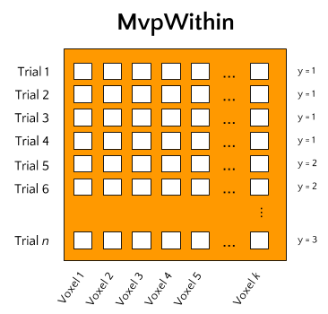
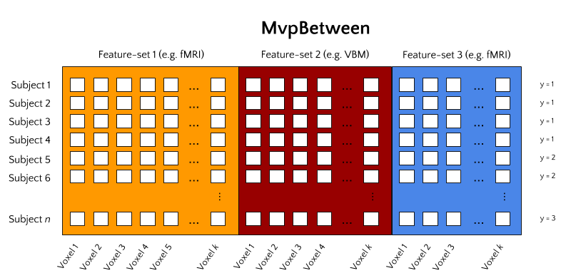
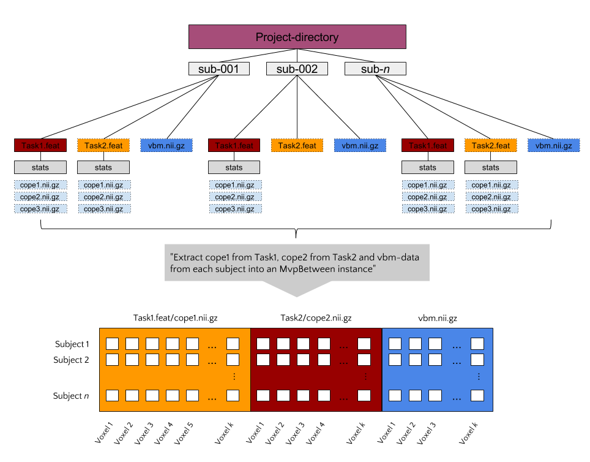

skbold - utilities and tools for machine learning on BOLD-fMRI data¶

The Python package skbold offers a set of tools and utilities for
machine learning and RSA-type analyses of functional MRI (BOLD-fMRI) data.
Instead of (largely) reinventing the wheel, this package builds upon an existing
machine learning framework in Python: scikit-learn.
Specifically, it offers a module with scikit-learn-style ‘transformers’ (with
the corresponding scikit-learn API) and some (experimental) scikit-learn
type estimators.
Next to these transformer- and estimator-functionalities, skbold offers
a new data-structure, the Mvp (Multivoxel pattern), that allows for an
efficient way to store and access data and metadata necessary for multivoxel
analyses of fMRI data. A novel feature of this data-structure is that it is
able to easily load data from FSL-FEAT output
directories. As the Mvp object is available in two ‘options’, they are
explained in more detail below.
Note
This is a test.
Mvp-objects¶
At the core, an Mvp-object is simply a collection of data - a 2D array
of samples by features - and fMRI-specific metadata necessary to perform
customized preprocessing and feature engineering. However, machine learning
analyses, or more generally any type of multivoxel-type analysis (i.e. MVPA),
can be done in two basic ways.
MvpWithin¶
One way is to perform analyses within subjects. This means that a model is fit on each subjects’ data separately. Data, in this context, often refers to single-trial data, in which each trial comprises a sample in our data-matrix and the values per voxel constitute our features. This type of analysis is alternatively called single-trial decoding, and is often performed as an alternative to massively (whole-brain) univariate analysis.
Ultimately, this type of analysis aims to predict some kind of attribute of the trials (for example condition/class membership in classification analyses or some continuous feature in regression analyses). Ultimately, group-analyses may be done on subject-specific analysis metrics (such as classification accuracy or R2-score) and group-level feature-importance maps may be calculated to draw conclusions about the model’s predictive power and the spatial distribution of informative features, respectively.
MvpBetween¶
With the apparent increase in large-sample neuroimaging datasets, another type of analysis starts to become feasible, which we’ll call between subject analyses. In this type of analysis, single subjects constitute the data’s samples and a corresponding single multivoxel pattern constitutes the data’s features. The type of multivoxel pattern, or ‘feature-set’, can be any set of voxel values. For example, features from a single first-level contrast (note: this should be a condition average contrast, as opposed to single-trial contrasts in MvpWithin!) can be used. But voxel patterns from VBM, TBSS (DTI), and dual-regression maps can equally well be used. Crucially, this package allows for the possibility to stack feature-sets such that models can be fit on features from multiple data-types simultaneously.
MvpResults: model evaluation and feature visualization¶
Given that an appropriate Mvp-object exists, it is really easy to
implement a machine learning analysis using standard scikit-learn
modules. However, as fMRI datasets are often relatively small, K-fold
cross-validation is often performed to keep the training-set as large as
possible. Additionally, it might be informative to visualize which features
are used and are most important in your model. (But, note that feature mapping
should not be the main objective of decoding analyses!) Doing this - model
evaluation and feature visualization across multiple folds - complicates the
process of implementing machine learning pipelines on fMRI data.
The MvpResults object offers a solution to the above complications. Simply
pass your scikit-learn pipeline to MvpResults after every fold and it
automatically calculates a set of model evaluation metrics (accuracy,
precision, recall, etc.) and keeps track of which features are used and how
‘important’ these features are (in terms of the value of their weights).
Transformers: fMRI feature selection and extraction¶
The transformers module in skbold contains a set of scikit-learn type
transformers that can perform various types of feature selection and
extraction specific to multivoxel fMRI-data. For example, the RoiIndexer-
transformer takes a (partially masked) whole-brain pattern and indexes it with
a specific region-of-interest defined in a nifti-file. The transformer API
conforms to scikit-learn transformers, and as such, (almost all of them) can be
used in scikit-learn pipelines.
To get a better idea of the package’s functionality - including the use of
Mvp-objects, transformers, and MvpResults - a typical analysis workflow using
skbold is described below.
An example workflow: MvpWithin¶
Suppose you have data from an fMRI-experiment for a set of subjects who were presented with images which were either emotional or neutral in terms of their content. You’ve modelled them using a single-trial GLM (i.e. each trial is modelled as a separate event/regressor) and calculated their corresponding contrasts against baseline. The resulting FEAT-directory then contains a directory (‘stats’) with contrast-estimates (COPEs) for each trial. Now, using MvpWithin, it is easy to extract a sample by features matrix and some meta-data associated with it, as shown below.
from skbold.data2mvp import MvpWithin
feat_dir = '~/project/sub001.feat'
mask_file = '~/GrayMatterMask.nii.gz' # mask all non-gray matter!
read_labels = True # parse labels (targets) from design.con file!
remove_contrast = ['nuisance_regressor_x'] # do not load nuisance regressor!
ref_space = 'epi' # extract patterns in functional space (alternatively: 'mni')
beta2tstat = True # convert beta-estimates of COPEs to tstats
remove_zeros = True # remove voxels which are zero in each trial
mvp = MvpWithin(source=feat_dir, read_labels=read_labels,
remove_contrast=remove_contrast, ref_space=ref_space,
beta2tstat=beta2tstat, remove_zeros=remove_zeros,
mask=mask_file)
mvp.create() # extracts and stores (meta)data from FEAT-directory!
mvp.write(path='~/', name='mvp_sub001') # saves to disk!
Now, we have an Mvp-object on which machine learning pipeline can be applied:
import joblib
from sklearn.preprocessing import StandardScaler
from sklearn.svm import SVC
from sklearn.pipeline import Pipeline
from sklearn.cross_validation import StratifiedKFold
from sklearn.feature_selection import f_classif, SelectKBest
from skbold.transformers import RoiIndexer
from skbold.utils import MvpResultsClassification
mvp = joblib.load('~/mvp_sub001.jl')
pipe = Pipeline([
('scaler', StandardScaler()),
('roiindex', RoiIndexer(mvp=mvp, mask='~/amygdala_mask.nii.gz')),
('anova', SelectKBest(f_classif, k=100)),
('svm', SVC(kernel='linear'))
])
cv = StratifiedKFold(y=mvp.y, n_folds=5)
# Initialization of MvpResults; 'coef' indicates keeping track of weights!
mvp_results = MvpResultsClassification(mvp=mvp, n_iter=len(cv),
out_path='~/', feature_scoring='coef')
for train_idx, test_idx in cv:
train, test = mvp.X[train_idx, :], mvp.X[test_idx, :]
train_y, test_y = mvp.y[train_idx], mvp.y[train_idx]
pipe.fit(train, train_y)
pred = pipe.predict(test)
mvp_results.update(test_idx, pred, pipe) # update after each fold!
mvp_results.compute_scores() # compute!
mvp_results.write() # write file with metrics and niftis with feature-scores!
An example workflow: MvpBetween¶
Suppose you have MRI data from a large set of subjects (let’s say >50), including (task-based) functional MRI, structural MRI (T1-weighted images, DTI), and behavioral data (e.g. questionnaires, behavioral tasks). Such a dataset would qualify for a between subject decoding analysis using the MvpBetween object. To use the MvpBetween functionality effectively, it is important that the data is organized sensibly. An example is given below.
In this example, each subject has three different data-sources: two FEAT-
directories (with functional contrasts) and one VBM-file. Let’s say that we’d
like to use all of these sources of information together to predict some
behavioral variable, neuroticism for example (as measured with e.g. the
NEO-FFI). The most important argument passed to MvpBetween is source.
This variable, a dictionary, should contain the data-types you want to extract
and their corresponding paths (with wildcards at the place of subject-specific
parts):
import os
from skbold import roidata_path
gm_mask = os.path.join(roidata_path, 'GrayMatter.nii.gz')
source = {}
source['Contrast_t1cope1'] = {'path': '~/Project_dir/sub*/Task1.feat/cope1.nii.gz'}
source['Contrast_t2cope2'] = {'path': '~/Project_dir/sub*/Task2.feat/cope2.nii.gz'}
source['VBM'] = {'path': '~/Project_dir/sub*/vbm.nii.gz', 'mask': gm_mask}
Now, to initialize the MvpBetween object, we need some more info:
from skbold.data2mvp import MvpBetween
subject_idf='sub-0??' # this is needed to extract the subject names to
# cross-reference across data-sources
subject_list=None # can be a list of subject-names to include
mvp = MvpBetween(source=source, subject_idf=subject_idf, mask=None,
subject_list=None)
# like with MvpWithin, you can simply call create() to start the extraction!
mvp.create()
# and write to disk using write()
mvp.write(path='~/', name='mvp_between') # saves to disk!
This is basically all you need to create a MvpBetween object! It is very
similar to MvpWithin in terms of attributes (including X, y, and
various meta-data attributes). In fact, MvpResults works exactly in the same
way for MvpWithin and MvpBetween! The major difference is that MvpResults
keeps track of the feature-information for each feature-set separately and
writes out a summarizing nifti file for each feature-set. Transformers also
work the same for MvpBetween objects/data, with the exception of the
cluster-threshold transformer.
Installing skbold¶
Although the package is very much in development, it can be installed using pip:
$ pip install skbold
However, the pip-version is likely behind compared to the code on Github, so to get the most up to date version, use git:
$ pip install git+https://github.com/lukassnoek/skbold.git@master
Or, alternatively, download the package as a zip-file from Github, unzip, and run:
$ python setup.py install
Documentation¶
For those reading this on Github, documentation can be found on readthedocs.org!
Credits¶
When I started writingthis package, I knew next to nothing about Python programming in general and packaging in specific. The mlxtend package has been a great ‘template’ and helped a great deal in structuring the current package. Also, Steven has contributed some very nice features as part of his internship. Lastly, Joost has beena major help in virtually every single phase of this package!